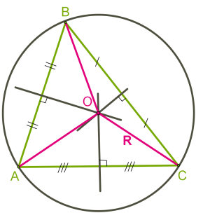
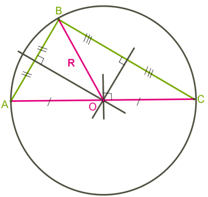
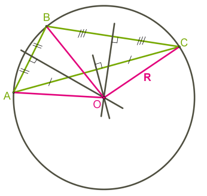
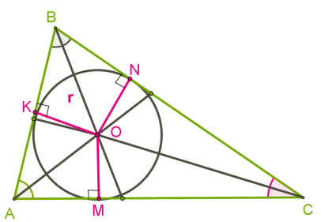

Коло, описане навколо трикутника
Коло називається описаним навколо трикутника, якщо всі вершини трикутника розміщені на колі.
Центр кола рівновіддалений від усіх вершин, тобто повинен розташовуватися в точці перетину серединних перпендикулярів до сторін трикутника.
Навколо будь-якого трикутника можна описати коло, оскільки серединні перпендикуляри до сторін перетинаються в одній точці.
Для гострокутного трикутника центр кола знаходиться в трикутнику.
Інша ситуація з прямокутним і тупокутним трикутниками.
Коло, вписане в трикутник
Коло називається вписаним у трикутник, якщо всі сторони трикутника дотикаються до кола.
Центр кола рівновіддалений від усіх сторін, тобто повинен розміщуватися в точці перетину бісектрис трикутника.
У будь-який трикутник можна вписати коло, оскільки бісектриси трикутника перетинаються в одній точці.
Оскільки бісектриси кутів трикутника завжди перетинаються всередині трикутника, для всіх трикутників центр уписаного кола розміщується в трикутниках.
У рівностороннього трикутника збігаються бісектриси, медіани та висоти, тобто ці відрізки є також серединними перпендикулярами. Це означає, що центри описаного і вписаного кола збігаються.